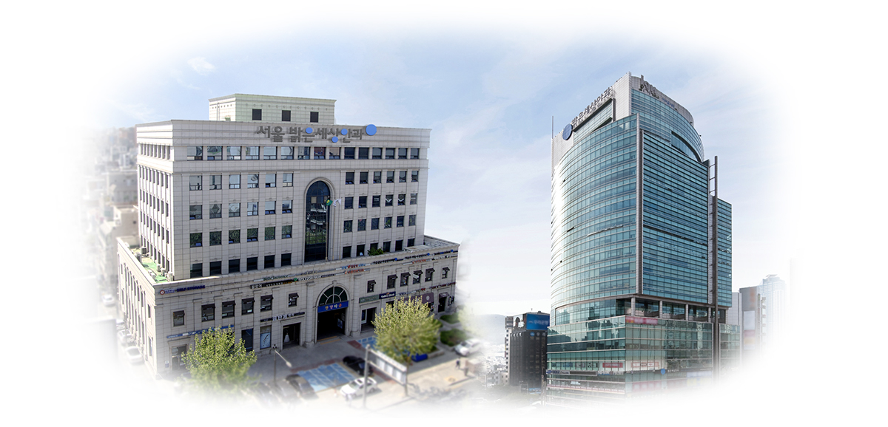
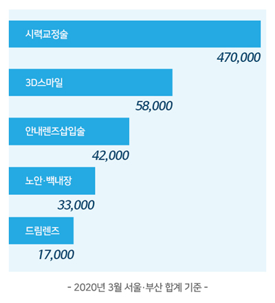
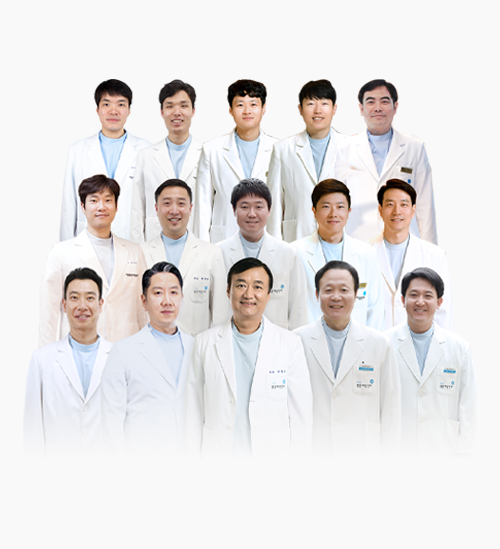
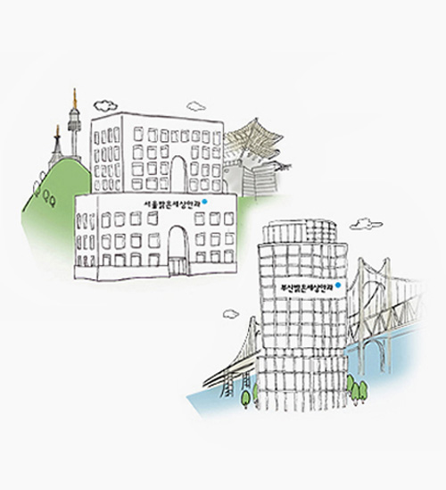
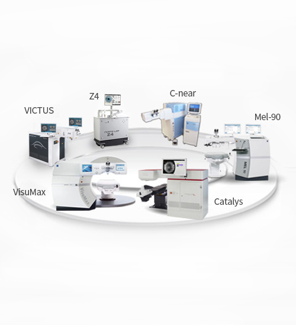
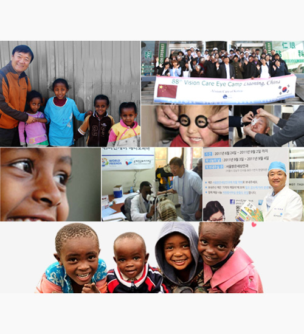

SINCE 1997 밝은세상안과

1997년부터 지금까지 시력교정술의 역사를 만들어 온
서울·부산 밝은세상안과
페이지 제목
-
풍부한 수술경험 (건)
470,000
-
끊임없이 노력해온 시간
192,720
-
첨단 레이저 보유
7종 14대
-
우수한 안과전문의
15인
페이지 제목
-
서울·부산 밝은세상안과는
-
1997년 부산에 ‘밝은세상안과’ 개원을 시작으로 국내 라식, 라섹을 도입·소개·보급하며 서울밝은세상안과(구, 청담밝은세상안과) 개원과 함께 시력교정술의 발전과 변화를 선도하는 안과로 성장해왔습니다.
지난 20여년 동안 진료, 교육, 연구 분야에 걸쳐 아낌 없는 투자와 개발을 통해 명실상부 ‘시력교정술은 밝은세상안과’라는 타이틀에 맞는 의료기관으로써 많은 분들에게 관심과 사랑을 받아오고 있습니다.
이에 라식, 라섹 분야에서 독보적인 수술 경험을 보유한 것은 물론, 렌즈삽입술 최다 수술 및 의료진 교육기관 선정, 새로운 시력교정술 개발 등으로 국내를 넘어 세계 무대에서 활발한 활약을 펼치고 있습니다.
나아가 고객과 함께 소통하는 의료기관으로써 사회 공헌사업을 지속하며 여러분의 곁에서 행복을 드리고 슬픔을 나누며, 건강과 행복, 밝은 세상을 위해 노력하고 있습니다.
앞으로 서울·부산 밝은세상안과는 미래 헬스 케어를 바탕으로한 첨단 의료기술을 접목한 고품격 의료서비스를 위해 쉼 없이 정진 하겠습니다.
서울·부산 밝은세상안과
임직원 일동
페이지 제목
서울·부산 밝은세상안과 나아갈 길
- 
-
시력교정술 470,000건 달성
(서울·부산 밝은세상안과 2020년 3월 기준합계 수술건수)
끊임없는 혁신과 도전으로 ‘시력교정술’의 대명사로 서울부산 밝은세상안과가 자리매김하게 되었습니다. 풍부한 수술 경험과 축적된 수술 노하우로 더 밝은 시력을 위해 정진하고 있습니다. -
의학박사 & 안과 전문의로
구성된 우수 의료진이종호 대표원장을 중심으로 구성된 시력교정 전문 의료진은 지속적인 연구, 분석, 토론을 통해 대한민국을 넘어 세계인의 건강과 행복,
밝은세상을 위해 노력합니다. 사람 중심의 의료서비스로 좋은 시력,
그 이상의 기쁨을 드리겠습니다. - 
- 
-
대한민국
라식/라섹도입1세대!
서울·부산 밝은세상안과서울·부산 밝은세상안과는 시력교정술의 불모지였던 대한민국에서 라식, 라섹 수술 도입 1세대 안과로서 1997년 부산밝은세상안과 개원, 2000년 서울밝은세상안과(구 청담밝은세상안과)를 개원하며 소개 및 보급을 시작했습니다.
-
8종 16대 첨단
All Laser System(2020년 8월 서울부산 합계기준)
8종 16대의 첨단 레이저로 한 분, 한 분 각자의 눈에 적합한 개인별 맞춤 수술을 실시하고 있으며, All Laser System을 구축해 빠르고 우수한 시력교정술을 진행하고 있습니다.
특히 안전성과 성능이 검증된 레이저로 안전에 안전을 더한 수술을 실시합니다.
- 
- 
-
더 큰 밝은세상,
아름다운 소통과 나눔고객과 함께 소통하는 의료기관으로 거듭나기 위해 다양한 문화행사와 지구촌을 아우르는 사회공헌 사업에 앞장서고 있습니다.
서울·부산 밝은세상안과는 더 큰 밝은세상을 꿈꾸며, 꾸준한 사회활동과 나눔 캠페인을 통해 늘 여러분의 곁에서 행복을 드리고 슬픔을 나누는 이웃이 되겠습니다.